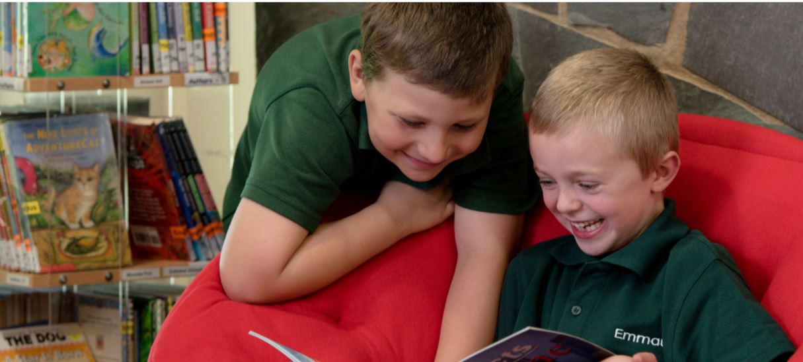

History of Emmaus Christian School
Our school was established in 1997 by an enthusiastic group of parents who were keen for educational options in North Canberra. They started the North Canberra Christian Education Association in mid 1996. Emmaus Christian School commenced in January 1997 with 88 pupils. The opportunity to use this site was a catalyst in attracting more families to the school. Prior to that, this site was a Catholic school for boys (Daramalan Junior School) for many years and before that it was the St Brigid’s Primary School run by the Brigidine nuns from the 1960′s. We grew to 125 pupils in 1998, each year committed to a class size of as close to 25 as we could feasibly manage. This remains one of the Board’s central goals.

In 1999 we grew to 175 pupils – the maximum we plan to have on our current site in primary school. A small school like Emmaus, is a place where all the children and teachers know each other. Despite our small size we are financially viable. In 2002, we purchased the school site from the Catholic Church, St Brigid’s Parish and in that year we had a ‘Celebration Ceremony’ to commemorate the acquisition of the site. We have enjoyed an excellent cooperative relationship with the Parish, who were very happy to have our school continue on the site. Also during 2002, our Secondary School was established with a Year 7/8 class.
In 2003, we added a Year 9 class and in 2004, a Year 10 class giving us our full compliment of Year levels for our Secondary School. To commence the 2004 school year, we moved into our newly constructed Secondary building, which is housed on the Wilshire Street side of the school grounds.
We continue to seek the best possible teachers, curriculum and facilities for our students as we partner with parents to give an excellent education and mentoring within a Christian worldview school and community.